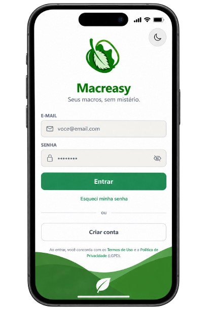

Como o Macreasy Funciona
Reconhecimento e Registro
Basta registrar a sua refeição no aplicativo para que o sistema identifique os componentes e converta a visualização do prato em dados quantitativos detalhados.
Análise de Macronutrientes
Acompanhe em tempo real a divisão exata de proteínas, carboidratos, gorduras e calorias totais, adaptando as metas de acordo com o seu objetivo pessoal.
Evolução e Aprendizado
Acesse o histórico completo da sua rotina alimentar, visualize gráficos de progresso e desenvolva autonomia para fazer escolhas mais conscientes todos os dias.
Sua alimentação. Seus dados. Seu conhecimento.
Acreditamos que o segredo para uma constância saudável está na clareza das informações. Ao ter acesso rápido aos dados nutricionais do seu dia a dia, você deixa de depender de achismos e assume o controle total sobre sua rotina.
Conhecer na Prática